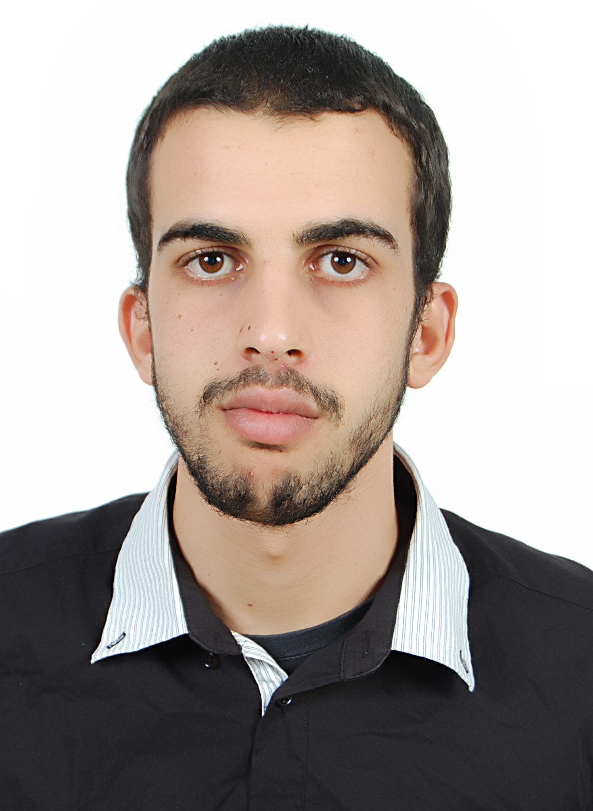

ZIYANI Mohamed
Contact
TÉLÉPHONE : 212627652938
email : Mohamedzianijb@gmail.com
Adresse : Dr.ignidifen belfaa chtouka ait baha
PROFIL
Age : 22 ans
Célibataire
Permis : B
PARCOURS PROFESSIONNEL
20/04/2019 - 07/06/2019:
SFE à la société Commodity Investment and Trading Morocco
16/04/2018 - 02/06/2018:
SFE à Les Huileries du Souss Belhassan
20/11/2018 - 07/04/2018:
PFE à la société SILDA
05/07/2017 - 05/08/2017:
Stage d’Initiation à la société AZURA
FORMATION
2018/2019:
Licence Professionnelle :
Option :
Gestion de l’Environnement et DéveloppementDurable
à la Faculté Pluridisciplinaire de Taroudant.
2016/2018:
Diplôme Universitaire de Technologie (DUT) :
Option :
Génie Bio Industriel
à la Ecole Supérieur de Technologie d’Agadir
2015/2016:
Baccalauréat :
Option :
Sciences agronome
Lycée Agricole à Oulad Taima
COMPÉTENCES
Géomatique :
géodésie et Système d’Information Géographique
télédétection
Etude d'impacts sur l'environnement
contrôle de la qualité de l’Environnement
Systèmes Management qualité
Bases de données
Échantillonnage